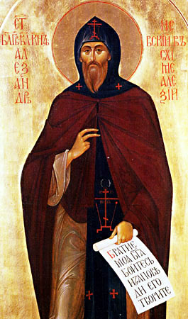

|

Святой благоверный великий князь Александр Невский — в схиме Алексий
(память празднуется 12 сентября и 6 декабря по новому стилю)
Святой благоверный великий князь Александр
Невский родился 30 мая 1220 г. в городе Переславле-Залесском. Отец его,
Ярослав, в крещении Феодор, был младшим сыном Всеволода III Большое
Гнездо. Мать св. Александра, Феодосия Игоревна, рязанская княжна. В 1227
г. князь Ярослав, по просьбе новгородцев, стал княжить в Новгороде
Великом. Он взял с собой сыновей, Федора и Александра. Начиналось самое
трудное время в истории Руси: с востока шли монгольские орды, с запада
надвигались рыцарские полчища. В этот грозный час Промысел Божий воздвиг
на спасение Руси святого князя Александра — великого
воина-молитвенника, подвижника и строителя земли Русской.
Воспользовавшись нашествием Батыя, полчища
крестоносцев вторглись в пределы Отечества. Первыми были шведы.
Множество кораблей подошло к Неве под командованием ярла Биргера. Св.
Александр, ему не было тогда еще 20 лет, долго молился в храме Святой
Софии. Архиепископ Спиридон благословил св. князя и воинство его на
брань. Выйдя из храма, Александр укрепил дружину исполненными веры
словами: "Не в силе Бог, а в правде. Иные — с оружием, иные — на конях, а
мы Имя Господа Бога нашего призовем!" С небольшой дружиной князь
поспешил на врагов. Но было чудное предзнаменование: стоявший в морском
дозоре воин видел на рассвете 15 июля ладью, плывущую по морю, и на ней
св. мучеников Бориса и Глеба, в одеждах багряных. Александр, ободренный,
мужественно повел с молитвой войско на шведов. "И была сеча великая с
латинянами, и перебил их бесчисленное множество, и самому предводителю
возложил печать на лицо острым копьем”. За эту победу на реке Неве,
одержанную 15 июля 1240 г., народ назвал св. Александра Невским.
Опасным врагом оставались немецкие рыцари. В
1241г. молниеносным походом св. Александр вернул древнюю русскую
крепость Копорье, изгнав рыцарей. В 1242 г. зимой он освободил Псков, а 5
апреля дал Тевтонскому ордену решительное сражение на льду Чудского
озера. Крестоносцы были полностью разгромлены. Имя св. Александра
прославилось по всей Святой Руси.
Западные пределы Русской земли были надежно
ограждены, настало время обезопасить Русь с востока. В 1242 г. св.
Александр Невский со своим отцом, Ярославом, выехал в Орду. Священную
миссию защитников Русской Земли Господь увенчал успехом, но на это
потребовались годы трудов и жертв. Князь Ярослав отдал за это жизнь.
Завещанный отцом союз с Золотой Ордой — необходимый тогда для
предотвращения нового разгрома Руси — продолжал крепить св. Александр
Невский. Обещав свою поддержку, св. Александр дал возможность Батыю
выступить в поход против Монголии, стать главной силой во всей Великой
Степи. В 1252 г. многие русские города восстали против татарского ига.
Снова возникла угроза самому существованию Руси. Св. Александру опять
пришлось ехать в Орду, чтобы отвести от русских земель карательное
нашествие татар. Св. Александр стал единовластным великим князем всей
Руси. В 1253 г. он отразил новый набег на Псков, в 1254 г. заключил
договор о мирных границах с Норвегией, в 1256 г. ходил в поход в финскую
землю. В тьму язычества св. Александр нес свет Евангельской проповеди и
православной культуры. Все Поморье было просвещено и освоено русскими.
В 1256 г. умер хан Батый. Св. князь в третий
раз поехал в Сарай, чтобы подтвердить мирные отношения Руси и Орды с
новым ханом Берке. В 1261 г. стараниями св. Александра и митрополита
Кирилла была учреждена в Сарае, столице Золотой Орды, епархия Русской
Православной Церкви.
Наступила эпоха великой христианизации языческого Востока, в этом
было пророчески угаданное св. Александром Невским историческое призвание
Руси. В 1262 г. по его указанию во многих городах были перебиты
татарские сборщики дани и вербовщики воинов — баскаки. Ждали татарской
мести. Но великий заступник народа вновь поехал в Орду и мудро направил
события совсем в иное русло: ссылаясь на восстание русских, хан Берке
прекратил посылать дань в Монголию и провозгласил Золотую Орду
самостоятельным государством, сделав ее тем самым заслоном Руси с
востока. В этом великом соединении русских и татарских земель и народов
созревало и крепло будущее многонациональное Российское государство,
включившее впоследствии в пределы Русской Церкви почти все наследие
Чингиз-Хана до берегов Тихого океана.
Эта дипломатическая поездка св. Александра
Невского в Сарай была четвертой и последней. На обратном пути, не
доезжая до Владимира, в Городце, в монастыре князь-подвижник предал свой
дух Господу 14 ноября 1263 года, завершив многотрудный жизненный путь
принятием святой иноческой схимы с именем Алексий. Святое тело его
понесли к Владимиру, девять дней длился путь, и тело оставалось
нетленным. 23 ноября при погребении его в Рождественском монастыре во
Владимире, было явлено Богом "чудо дивно и памяти достойно".
Нетленные мощи благоверного князя были открыты,
по видению, пред Куликовской битвой в 1380 г., и тогда же установлено
местное празднование. Общецерковное прославление св. Александра Невского
совершилось при митрополите Макарии на Московском соборе 1547 г.
30 августа 1721 г. Петр I, после
продолжительной и изнурительной войны со шведами, заключил Ништадский
мир. Этот день решено было освятить перенесением мощей благоверного
князя Александра Невского из Владимира в новую северную столицу,
Петербург. Вывезенные из Владимира 11 августа 1723 г., святые мощи были
привезены в Шлиссельбург 20 сентября и оставались там до 1724 г., когда
30 августа были установлены в Троицком соборе Александро-Невской лавры,
где почивают и ныне. Празднество было установлено указом от 2 сентября
1724 г., восстановленное в 1730 г.
Имя защитника рубежей России и покровителя воинов
известно далеко за пределами нашей Родины. Свидетельство тому —
многочисленные храмы, посвященные святому Александру Невскому. Наиболее
известные из них: Патриарший собор в Софии, кафедральный собор в
Таллинне, храм в Тбилиси. Эти храмы — залог дружбы русского
народа-освободителя с братскими народами.
Акафист святому благоверному великому князю Александру Невскому, в иноках Алексию.
Кондак 1
Избранному воеводе земли Российский, светлому
украшению Церкве Православныя, святому благоверному великому князю
Александру Невскому, похвальная восписующе, яко верою враги, видимыя же и
невидимыя, победившему, и в вере своей, по речению апостолову,
добродетель, в добродетели же разум, в разуме же воздержание, в
воздержании же терпение, в терпении же благочестие, братолюбие и любовь
явившему со умилением и радостию возопиим: Радуйся, святый благоверный
великий княже Александре.
Икос 1
Со Ангелы и всеми святыми предстоиши ныне
Христу, блаженне Александре, моляся о любовию чтущих тя: темже,
поминающе, яко, измлада Христа возлюбив, к небесным духом прилепился
еси, безплотных подражав житию, ублажаем тя, вопиюще: Радуйся, корене
благочестиваго отрасле пречестная; радуйся, благоверия предков
наследниче. Радуйся, добродетелей отца боголюбиваго подражателю;
радуйся, кротости и благочестия матерняго преемниче. Радуйся, вождю к
Небесем стада своего христолюбиваго: радуйся, в житии всех рабов Божиих
друже и ревнителей благочестия собеседниче. Радуйся, преподобных лика
богосветлаго сопричастниче; радуйся, веры Христовы непобедимый
исповедниче. Радуйся, волею мучениче, сликовствуяй ныне сонму мучеников
добропобедному; радуйся, христианскаго упования и любве всем нам
девственный проповедниче. Радуйся, уставов и чина церковнаго
благолепного ревнителю; радуйся, верных чад Церкове и угодников Божиих
сонаследниче. Радуйся, святый благоверный великий княже Александре.
Кондак 2
Видевшие лепоту лица и телеснаго возраста
твоего, новоградстии людие радовахуся и славляху Бога, взирающе на тя:
мы же, поминающе светлейшия паче солнца добродетели твоя, блаженне
Александре, прославившему тя Господеви поим: Аллилуиа.
Икос 2
Разумел еси, богомудре Александре, яко преходит
образ мира сего, едино же есть на потребу человеком, еже благоугодити
Господеви: сего ради измлада от любве к миру и яже в мире уклонился еси,
возжделев же зде сущими стяжати небесная, яко верный раб Господу во
всем житии неленостно послужил еси. Темже вопием ти: Радуйся, подвижниче
веры, угождение Богу паче всего предызбравый; радуйся, подобие Аврааму
во всем житии непорочно пред Богом поживый. Радуйся, Исааково послушание
показывай; радуйся, путем Иаковля смиренномудрия ходивый. Радуйся,
Иосифову чистоту и целомудрие стяжавый; радуйся, Моисеову любовь к людем
своим в себе явивый. Радуйся, якоже Самуил чиста себе от всякаго
любостежания соблюдавый; радуйся, кротостию Давидовою враги своя
победивый. Радуйся, Петровой пламенней вере поревновавый; радуйся, с
Павлом игу Христову себе поработивый. Радуйся, богомудрие Иоанново
подвигом поучения в слове Божием снискавый; радуйся, многих святых
добродетели в себе совокупивый. Радуйся, святый благоверный великий
княже Александре.
Кондак 3
Силою веры стяжал еси, блаженне Александре,
высшее любомудрие, егоже ради, презирая плоть, прилежал еси о души
безсмертней: темже ублажающе тя, яко стяжавша ныне безсмертие, вопием
прославившему тя Христу: Аллилуиа.
Икос 3
Имеяй всегда пред очима своима Господа,
трезвенно пожил еси, блаженне Александре, и вся яже творил еси, творя во
славу Божию, угодил еси Богу, Емуже предстоиши ныне с лики от века
угодивших: темже радующеся о тебе, зовем ти: Радуйся, истиннаго
трезвения подвижниче; радуйся, спасительнаго созерцания любителю.
Радуйся, наставниче наш в подвиге от мира удаления; радуйся, стяжателю
совершеннаго дара бодрственнаго себе внимания. Радуйся, всякого
безсловеснаго вожделения твердый противоборниче; радуйся, благочестия
добрый подвижниче, преуспевый в разуме и деянии. Радуйся, яко силою
молитвы препобедил еси диавольская искушения; радуйся, яко себе от греха
оградил еси диавольская скушения; радуйся, яко себе от греха оградил
еси последних воспоминанием. Радуйся, яко возлюбил еси душею еже о
небесных помышление; радуйся яко преуспел еси в неленостных яже к Богу
молитвенных предстояниих. Радуйся, яко все жите свое освящал еси
непрестанным Имене Божия призыванием; радуйся, яко угождал еси Господеви
всяким благоугождением. Радуйся, святый благоверный великий княже
Александре.
Кондак 4
Бури искушений воздвигоша врази и противу тебе
блаженне Александре. Ты же препобедил еси сия силою благодати Христовы:
темже ныне, к тихому пристанищу притек, с лики искушенных в мире,
победивших же мир, вопиеши Христу: Аллилуиа.
Икос 4
Слышав Павла, глаголюща: "Всяк подвизайся от
всех воздержится", вся в уметы вменил еси, блаженно Александре, да
Христа приобрящеши: подвигами же отвержения себе и ко благим делом
принуждения стяжал еси свободу славы чад Божиих: темже ублажающе тя,
вопием ти таковая: Радуйся, образ отвержения себе нам показывай;
радуйся, ношению креста в последовании Христу нас научивый. Радуйся,
плоть со страстьми и похотьми ея поправый; радуйся, житием твоим суету
мира обличавый. Радуйся, всякое пристрастие земное от себе отгнавый;
радуйся, разум свой в послушание веры пленивый. Радуйся, волею своею
благое иго заповедей Христовых подъявый; радуйся, сердце свое от всякие
страсти душевредныя чисто сохранивый. Радуйся, себе Богу всесовершенне
предавый; радуйся, чрез все житие свое Богу послуживый. Радуйся,
совершением заповедей любовь к себе Божию стяжавый; радуйся, наследие
Царствие благоугождением Богу улучивый. Радуйся, святый благоверный
великий княже Александре.
Кондак 5
Боготечною звездою пришел еси в мире, блаженне
Александре, блистающ славою и добродетелию: темже ныне сияеши на Небесех
славою вечною с лики праведник, с нимиже выну воспеваеши Христу:
Аллилуиа.
Икос 5
Видевше тя, блаженне Александре, николиже во
бранех побеждаема, всегда же побеждающа, невернии единаго имене твоего
устрашахуся, мы же, поминающе исполненное веры мужество твое, ублажаем
тя, глаголюще: Радуйся, доблественный в защиту веры и Церкве воителю;
радуйся, своея земли мужественный защитителю. Радуйся, наветов вражиих
мудрый раззорителю; радуйся, мира безпомощных сильный оградителю.
Радуйся, воинства свейскаго на брегах Невских славный победителю;
радуйся, безопасности всея северныя страны земли Российския охранителю.
Радуйся, злых козней иноверия, подвигших чуждую рать на землю нашу,
разрушителю; радуйся, законов правды богоукрепляемый утвердителю.
Радуйся, Пскова, отечества святые Ольги, свободителю; радуйся,
ненавидевших мира умирителю. Радуйся, буйства неустроенный в тыя дни
Литвы укротителю: радуйся, во всех сих бранех христолюбиваго воинства
своего мудрый предводителю. Радуйся, святый благоверный великий княже
Александре.
Кондак 6
Проповедника кротости и терпения явил еси себе,
блаженне Аллександре, последи преславных побед твоих: темже и стяжал
еси сугубый венец от Царя Христа, Емуже предстоиши ныне, вопия:
Аллилуиа.
Икос 6
Провозсиял еси, блаженне Александре, паче
мужества, терпением твоим, егоже стяжал еси, взирая на Начальника веры и
Совершителя Иисуса, Иже вместо предлежащия ему радосте претерпе Крест:
темже восхваляюще тя, усердно вопием: Радуйся, до конца в подвизех
служения Богу претерпевый; радуйся, терпению Христову верно подражавый.
Радуйся, силу заповеди Христовы, яже о любви ко врагом, премудре
уразумевай; радуйся, и согрешшим противу тебе избавленным тобою людем
любовь истинную показавый. Радуйся, во искушении от народа своего
хитрость лукавого прозревый; радуйся, мирным отбытием своим из земли
своея злобу врага поправый. Радуйся, и во всем житии своем ухищрения
сатаны проразумевый; радуйся, злое благим, по апостолу, выну
препобеждавый. Радуйся, паки, в годину скорби, в помощь оскорбившему тя
Новуграду предуспевый; радуйся, сего ради пламенную любовь от народа
своего себе снискавый. Радуйся, Божия посещения, болезни и лишения со
упованием терпевый; радуйся, сего ради светлый венец от Господа
стяжавый. Радуйся, святый благоверный великий княже Александре.
Кондак 7
Хотяй провозсияти тебе всеми добродетельми,
блаженне Александре, Владыка Христос призвал есть тебе к служению людем
твоим во дни посещения: ты же притяжал еси к терпению смирение, егоже
ради ныне превознесен еси, предстоя Богу с песнию: Аллилуиа.
Икос 7
Дивно бе видети, како непобедимый воитель
смиренно преклоняет главу свою пред неверными, ихже посла Господь на
люди своя ради грех их: дивно ж есть и воспомянути непобедимое смирение
твое, блаженне Александре, имже и Господеви благоугодил еси, и люди своя
спасл еси. Темже благодарно вопием ти: Радуйся, смирения Господня
подражателю; радуйся, подобающаго богопоставленным властем почитания
учителю. Радуйся, всякого превозношения противоборче; радуйся, истиннаго
послушания подвижниче. Радуйся, всем нам образе вернаго Богу служения;
радуйся, начальствующим наставниче в богоприятном людем предстоянии.
Радуйся, подвластных руководителю в богозаповеданном предержащим властем
повиновении; радуйся, яко многажды ради блага людей своих путьшествовал
еси к безбожным, ни во чтоже вменяя яже от них испытания. Радуйся, яко
не устрашился еси, призвав Бога, приити к Батыеви, исполняя его веление;
радуйся, яко многащи воспринимал еси на себе страшный ответ о
неразумных народа своего востаниих. Радуйся, яко оградил еси люди твоя
от зловреднаго с неверными общения; радуйся, яко мудре оградил еси в
земли своей отеческия доблести и предания. Радуйся, святый благоверный
великий княже Александре.
Кондак 8
Странническое житие прешел еси на земли,
блаженне Александре, не ведый покоя в трудех своих и не имый зде
пребывающаго града, но грядущаго взыскуяй: сего ради ныне, блаженне,
вселился еси в вечных обителех, выну поя Богу: Аллилуиа.
Икос 8
Всею душею послужив Господу и всем житием своим
благоугодив ему, прославился еси благочестием, егоже ради и исповедник
явился еси веры Христовы, блаженне Александре: поминающе убо подвиг
исповедничества твоего, вопием ти: Радуйся, злобы неверных не
устрашивыйся; радуйся, твари паче Создавшаго не послуживый. Радуйся,
солнцу и огню в стане безбожных не поклонивыйся; радуйся, веру свою во
искушении сохранивый. Радуйся, велению безбожному не покоривыйся;
радуйся, твердый проповедник веры пред неверными себе явивый. Радуйся, с
сугубою славою, по исповедании своем, в землю свою возвративыйся;
радуйся, во всем житии верным вере отцев пребывый. Радуйся, от лести
иноверия премудре уклонивыйся; радуйся, лукавство проповедников лжеверия
яве обличивый. Радуйся, твердый защитник правоверия явивыйся; радуйся,
лжесловесие врагов Православия словом здравым препобедивый. Радуйся,
святый благоверный великий княже Александре.
Кондак 9
Всего себе повинув Богови, яко раб благий и
верный послужил еси Ему, блаженне Александре, паче сверстник твоих для
земли твоея потрудився: темже и внити сподобился еси в радость Господа
своего, Емуже предстоиши ныне, со Ангелы поя: Аллилуиа.
Икос 9
Витийствующий язык не возмогл бы восхвалити
дела твоя, блаженне Александре, яже совершил еси, полагая по братии душу
свою: смиренно убо понимающе сицевая исправления твоя, умиленную песнь
приносим ти, глаголюще: Радуйся, братолюбия христианскаго приискренний
ревнителю; радуйся, Моисеевы и Павловы любве ко братии подражателю.
Радуйся, заповедей Христовых яже о любви верный исполнителю; радуйся, и
всех нас в любви к присным дивный наставниче. Радуйся, примером своим
паче слова явивыйся стязающихся о наследии братии своих примиритель;
радуйся, о благе народа усердно в житии своем пекийся. Радуйся, общаго
мира во днех своих устроителю; радуйся, изгнанного страхом нашествий
татарских народа своего собирателю. Радуйся, безпомощных присный
защитителю; радуйся, нищих и алчущих питателю. Радуйся, сирых сильный
покровителю; радуйся, ныне всех скорбящих и нуждающихся мощный пред
Господом предстателю. Радуйся, святый благоверный великий княже
Александре.
Кондак 10
Спасти хотя душу свою, ведый же, яко не имущему
любве к Богу никиими же подвигами и добродетельми улучити спасение
возможно есть, стяжал оси венец добродетелей, еже есть любовь к Богу,
Емуже предстоя ныне, радостно вопиеши: Аллилуиа.
Икос 10
Царя Небеснаго возлюбив от всего сердца твоего,
и от всея души твоея, и всею мыслию твоею, принесл еси Ему, блаженне
Александре, посреди многоразличных приношений веры и усердия, себе
самого в жертву живу, святу, благоугодну: темже ублажающе тя, вопием ти:
Радуйся, в житии своем всеми богоугодными делы Господеви послуживый;
радуйся, обетами иночества святое житие свое увенчавый. Радуйся, многи
храмы Божии, безбожными разоренныя, обновивый; радуйся, к просиянию
подвигов постничества обители святые созидавый. Радуйся, подвизающихся
измлада в благочестии ради Бога возлюбивый; радуйся, ангельский образ и
себе чистою душею предызбравый. Радуйся, в конец жития своего всего себе
Богу посвятивый; радуйся, приятием схимы, с новым именем Алексия,
всесовершенне себе Богу предавый. Радуйся, обетом девства чистоту сердца
своего явивый; радуйся, обетом нестяжания высоту духа своего показавый.
Радуйся, обетом послушания всецелое служение свое Единому Богу во веки
утвердивый; радуйся, к венцу мудраго и благаго князя мзду инока
притяжавый. Радуйся, святый благоверный великий княже Александре.
Кондак 11
Пение погребальное слезами растворяшеся у гроба
твоего, блаженне Александре: людие твои плакахуся о тебе, солнце земли
Русския, в полудни зашедшем, и рыдания прерываху умиленную песнь их к
Богу: Аллилуиа.
Икос 11
Свет славы небесныя осия тя вскоре, блаженне
Александре, утешая плачущия люди твоя: темже видяще при гробе твоем
знамения и чудеса, сынове росийствии достойне призываху тя, яко в
молитвах предстателя; мы же, поминающе скорое заступление твое, вопием
ти: Радуйся, угодниче Божий, в самом погребении прославление от Бога
получивый; радуйся, скорый предстателю наш, егоже призываху отцы наши в
нуждех и озлоблениих. Радуйся, в борьбе с татары князю Дмитрию Донскому
вспоможение явивый; радуйся, царю Иоанну на казанцы одоление
исходатаивый. Радуйся, исцеления многоразличныя всем подаваяй; радуйся,
слепым зрение молитвою твоею возвращаяй. Радуйся, хромым, припадающим ко
гробу твоему, хождение даруяй; радуйся, разслабленных неможение
врачуяй. Радуйся, одержимым от бесов свобождение подаваяй; радуйся,
безнадежных надеждою спасения оживляяй. Радуйся, в погубльших разум
разумение возставляяй; радуйся, от гроба твоего многообразныя
чудотворения присно источаяй. Радуйся, святый благоверный великий княже
Александре.
Кондак 12
Благодать познавше, живущую в нетленных мощех
твоих, людие владимирствии с любовию прихождаху ко святей раце твоей и,
радостно лобызающе ю, славляху о тебе Бога, прославляющаго святыя Своя,
со умилением вопиюще Ему: Аллилуиа.
Икос 12
Поюще добродетели и чудеса твоя, радостию
сретаху и провождаху отцы наши святое тело твое, егда, по желанию сердца
в Бозе почившаго Петра Перваго, преселяхуся святыя мощи твоя на новое
место покоища в славном святого Петра граде: и мы ныне, радующеся о
небесней славе твоей и обитании нетленных мощей твоих в богоизбранном
граде сем со онеми вопием тя: Радуйся, российский Иосифе, на новое место
успокоения преселивыйся; радуйся, всех концов земли Российския
покровителю. Радуйся, Петрова града благонадежное утверждение; радуйся,
тогоже во бранех Небесный защитителю. Радуйся, северныя столицы
неоцененное украшение; радуйся, тезоименитыя тебе обители славо и
утверждение. Радуйся, народу русскому здравие же и спасение молитвами
твоими подаваяй; радуйся, всех упование на тя возложивших, богомудрый
учителю. Радуйся, иноком, яко инок, полезное, примером жизни своея,
наставление преподаваяй; радуйся, мирским людем, яко в мире
потрудивыйся, к добродетелем общежития руководителю. Радуйся, нетлением
своим всем нам надежду Воскресения подавай; радуйся, всех нас в напастех
и скорбех поборниче, хранителю и свободителю. Радуйся, святый
благоверный великий княже Александре.
Кондак 13
О святый благоверный великий княже Александре!
От благоговейных сердец приносимую ти, аще и недостойную, хвалебную
песнь сию, приими от нас, яко усердную жертву сердец, любящих тя и
ублажающих святую память твою. Охраняй всех нас молитвами твоими: огради
ходатайствы твоими град твой и вся люди земли Российская, да тихое и
безмолвное житие поживше в нынешнем веце блаженство вечное наследием и
купно с тобою и всеми святыми выну сподобимся воспевати Богу: Аллилуиа.
(Это кондак читается трижды, затем икос 1 и кондак 1)
Молитвы святому благоверному великому князю Александру Невскому.
Mолитва первая
Скорый помощниче всех усердно к тебе
прибегающих и теплый наш пред Господем предстателю, святый благоверный
великий княже Александре! Призри милостивно на ны, недостойныя, многими
беззаконии непотребны себе сотворшия, к раце мощей твоих ныне
притекающая и из глубины сердца к тебе взывающия: ты в житии своем
ревнитель и защитник православныя веры был еси, и нас в ней теплыми
твоими к Богу молитвами непоколебимы утверди. Ты великое возложенное на
тя служение тщательно проходил еси, и нас твоею помощию пребывати
коегождо, в неже призван есть, настави. Ты, победив полки супостатов, от
пределов российских оных отгнал еси, и на нас ополчающихся всех видимых
и невидимых врагов низложи. Ты, оставив тленный венец царства земнаго,
избрал еси безмолвное житие и ныне праведно венцем нетленным увенчанный
на Небесех царствуеши, исходатайствуй и нам, смиренно молим тя, житие
тихое и безмятежное и к Вечному Царствию шествие неуклонное твоим
предстательством устрой нам. Предстоя же со всеми святыми Престолу
Божию, молися о всех православных христианех, да сохранит их Господь Бог
Своею благодатию в мире, здравии, долгоденствии и всяком благополучии в
должайшая лета, да присно славим и благословим Бога, в Троице Святей
славимаго, Отца и Сына и Святого Духа, ныне и присно и во веки веков.
Аминь.
Mолитва вторая
О святый благоверный княже Александре! Призри
милостивно на ны, недостойныя рабы Божии (имена), и исходатайствуй нам
житие тихое и безмятежное, и к вечному Царствию шествие неуклонное твоим
предстательством устрой нам, да сохранит нас Господь Бог Своею
благодатию в мире, здравии, долгоденствии и всяком благополучии в
должайшая лета, да присно славим и благословим Бога в Троице Святей
славимаго, Отца и Сына и Святаго Духа, ныне и присно, и во веки веков.
Тропарь святому благоверному князю Александру Невскому.
Tропарь, глас 4
Яко благочестиваго корене пречестная отрасль
был еси, блаженне Александре, яви бо тя Христос яко некое Божественное
сокровище Российстей земли, новаго чудотворца преславна и Богоприятна. И
днесь сошедшеся в память твою верою и любовию, во псалмех и пениих
радующеся славим Господа, давшаго тебе благодать исцелений. Егоже моли
спасти град сей, и стране нашей Богоугодней быти, и сыновом Российским
спастися.
Tропарь, глас 4 (Перенесение мощей)
Познай свою братию, российский Иосифе, не в
Египте, но на Небеси царствующий, благоверный княже Александре, и приими
моления их, умножая жита людем плодоносием земли твоея, грады
владычествия твоего ограждая молением и православным христианом на
сопротивныя споборствуя.
Величание (на успение великого князя Александра Невского).
Величаем тя, благоверный княже Александре, и
чтим святое успение твое, и ныне молиши за нас Христа, Бога нашего.
Кондак, глас 8
Яко звезду тя пресветлую почитаем, от востока
возсиявшую, и на запад пришедшую, всю бо страну сию чудесы и добротою
обогащаеши, и просвещаеши верою чтущия память твою, Александре блаженне.
Сего ради днесь празднуем твое успение, людие твои сущии, моли спасти
Отечество твое, и вся притекающия к раце мощей твоих, и верно вопиющия
ти: радуйся, граду нашему утверждение.
|


")

")